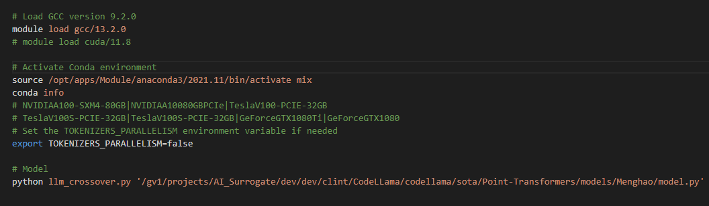

Point Cloud Classification Optimization¶
Overview¶
How to get started and setup your system for Point Cloud Classification Team
In Morris, Jurado, and Zutty’s recent paper “LLM Guided Evolution – The Automation of Models Advancing Models”, they were able to create a framework that uses LLMs with a layer of creativity to speed up the process of evolving ML models. Our specific goal is to generalize this framework by improving 2 current state of the start point cloud classification models. We picked Point Transformers and PointNet++ along with the Model40Net DataSet.
Point Transformers¶
Point Transformers improves point cloud processing by using self-attention mechanisms, similar to those in transformer models for sequential data. They apply attention to capture relationships between all points in the cloud, allowing the model to focus on relevant features and dependencies, both locally and globally, leading to better handling of irregular, unordered data. For our purposes we’re not using the EMADE Repo instead we’ll be using the Large Language Model Guide Evolution Repo.
PointNet++¶
PointNet++ extends PointNet by using a hierarchical approach to capture local geometric patterns in 3D point clouds. It samples and groups points into neighborhoods, applies PointNet-style operations to each group, and then propagates the learned features to progressively capture both local and global structures.
Setup¶
Clone GitHub Repository¶
Head over to Github.com and clone the Large Language Model Guided Evolution Generic Repository where we’re integrating the 2 point cloud classification models.
Clone Repository
Select the main branch, when you click the green button dropdown <> Code
Terminal Commands
mkdir LLMGE_Point_Cloud
cd LLMGE_Point_Cloud
git clone https://github.com/MosesTheRedSea/LLM-Guided-Evolution-Generic.git
PACE ICE Configurations¶
Training & evaluating models takes a significant amount of computing power which your computers alone may not be able to handle. Which is why this semester we will make great use of PACE ICE.
What is PACE ICE?
PACE stands for Partnership for an Advanced Computing Environment, while ICE is the Instructional Cluster Environment.
ICE provides students and instructors with a high-performance computing environment for courses, including those in the College of Computing.
It’s a free resource for instructional purposes.
Important Links
The Georgia Tech VPN, specifically the GlobalProtect VPN, is a secure network connection that allows users to access Georgia Tech resources and services from off-campus.
username : gatech username - without @gatech.edu
password : gatech account password
You can access any website through the VPN through the
enter urldropdown.
Enter in the pace-ice link: https://ondemand-ice.pace.gatech.edu/
Note
You must be on the vpn to access pace.
You screen will be redirected to the pace-ice landing page.

Click on the
Fliesdropdown in the top-left corner, then select theHome Directory
Traverse all the way to your scratch directory so that we can drag and drop our LLM-GE Repository that you cloned to your local computer.
Click the Upload Button at the top of the window, and drag and drop your LLMGE-Generic Repository into your scratch directory.
Now that we finally have the repository on PACE ICE we can start the setup.
From here click
Interactive Appsdropdown, and selectVS Codethe last option on the bottom.
Check the settings (change number of hours to
8) then click launch.
Head back to the home page, and click on
My Interactive Session.
WHen you click on the Interactive Sessions button at the top of the page, it will redirect to
another page that displays every current running session.
The Session you just ceated has been added to the queue, one the appropiate resoruces are avaliable PACE ICE
will let you connect and load in the session in VSCode’s Web Applicaton.
Once you’re in VSCode, simply click
File -> Open Folder, and go to the directory you saved the LLMGE Repo in your scratch or whichever folder.
Before we begin integrating different architectures into LLMGE, I want to explain the codebase itself how it works, what we’re trying to optimize, and our expected results.
Large Language Model Guided Evolution¶
Large Language Model Guided Evolution is an innovative architecture that leverages the reasoning capabilities of Large Language Models to guide evolutionary search and refinement of neural network architectures.
The system combines natural language reasoning, feedback-based learning, and genetic optimization techniques to automatically discover and improve neural architectures.
Codebase Breakdown¶
The codebase is organized into several key directories and files, each serving specific functions in the evolutionary process:
sota
sota (State of the Art) directory holds various key information we need for LLMGE to run smoothly.
Model Architectures: Houses the baseline neural network architectures targeted for evolutionary improvement
Dataset Configurations: Contains dataset specifications and preprocessing scripts
Training Scripts: Includes standardized training procedures and evaluation protocols
src
The main source directory contains the core configuration files:
Large Language Model Configuration, Specific Directories, and Dataset paths
constants.py
Centralized configuration file containing system parameters, hyperparameters, and global constants.
Seed network, data files, and train file path directories listed above for global access throughout codebase.
Large Language Model Configuration, along with Evolutionary Alogirthm predefined configurations, population size, number of generations, and weights.
templates
The templates sirectory houses validation and code modification templates prompt and code generation templates used by the LLM.
There are a wide variety of different prompts we submit to the LLM, we have the variant templates which request for modifications to the submitted SEED file.
There is also a validation prompt that helps with cleaning code received from LLM, invalid syntax, unfinshed responses, invalid packages.
llm_crossover.py
Implements LLM-guided crossover operations that intelligently combine features from parent architectures.
llm_mutation.py
Handles LLM-directed mutation operations for architecture modification and enhancement.
llm_utils.py
Utility functions supporting LLM interactions, prompt processing, and response parsing.
llm_utils possess all the necessary methods needed for llm code generation and quality control.
The clean_code_from_llm has a validation sequence that ensures the quality of code recieved from the LLM, is
The generate_augmented_code allows for a wide variety of LLM configurations, either using the hugging-face API, or a local LLM.
You can specifiy eother by configuring the LLM_MODAL & hugging_face values in constants.py
run.sh
Primary shell script for launching evolution experiments
run_improved.py
Enhanced execution script for running evolution experiments with improved features
server.py
Server component for distributed Local or API LLM execution
The server.py file helps with loading the local LLM stored on PACE ICE, for us to submit the mutation prompts to.
We load the Local LLM, so that we can submit prompts of different token lengths and get a reponse in a reasonable amount of time.
mixt.sh
Specialized script for mixed or multi-objective evolution scenarios
Code Workflow¶
ExquisiteNetV2
This section will explain the codebase workflow with the default implemented model, ExquisiteNetV2.
Handles LLM-directed mutation operations for architecture modification and enhancement.
llm_utils.py
Utility functions supporting LLM interactions, prompt processing, and response parsing.
llm_utils possess all the necessary methods needed for llm code generation and quality control.
The clean_code_from_llm has a validation sequence that ensures the quality of code recieved from the LLM, is
The generate_augmented_code allows for a wide variety of LLM configurations, either using the hugging-face API, or a local LLM.
You can specifiy eother by configuring the LLM_MODAL & hugging_face values in constants.py
run.sh
Primary shell script for launching evolution experiments
run_improved.py
Enhanced execution script for running evolution experiments with improved features
server.py
Server component for distributed Local or API LLM execution
The server.py file helps with loading the local LLM stored on PACE ICE, for us to submit the mutation prompts to.
We load the Local LLM, so that we can submit prompts of different token lengths and get a reponse in a reasonable amount of time.
mixt.sh
Specialized script for mixed or multi-objective evolution scenarios
Download Dataset
ExquisiteNetV2, a Lightweight CNN designed for image classification, tested on 15 datasets (CIFAR-10, MNIST) with 518,230 parameters, achieving 99.71% accuracy on MNIST.
Go into the sota (State of the art) directory and click on the ExquisiteNetV2 directory.
Inside this directory you will see a README.md file which contains key information for the dataset.
# Train Cifar-10 The best weight has been in the directory `weight/exp`. If you want to reproduce the result, you can follow the procedure below. - __Download the cifar-10 from https://www.cs.toronto.edu/~kriz/cifar.html 1. Download python version and unzip it. 2. Put `split.py` into the directory `cifar-10-python` `python split.py` Now you get the cifar10 raw image in the directory `cifar10`
Click the link to go to the cifar10 website
Make sure to sleect the CIRFAR-10 python version Link
It will download the cifar-10-python.tar file to your computer
Once you click on it you will see another ciar-10-bathces-py folder
Make sure you extact the contents of cifar-10-python.tar to your computer
Then head on over to the PACE ICE Instructional Cluster, then drag & drop the file into the ExquisteNetV2 directory
Once the file is there you will run
`python split.py`
This command will format the cifar-10-bathces-py folder and create another directory called cifar-10, with the test and train data.
Constants.py
root directory is the path to LLMGE folder /home/hice1/madewolu9/scratch/llm-guided-evolution/
data path is the path to the sota model dataset ExquisiteNetV2/cifar10
sota path is the (state of the art) model path ExquisiteNetV2/
seed network is the main model file for the SOTA model ExquiteNetV2/network.py
model variable is the name of the SEED network file without .py network
train file path is the path to the train.py file used within the SOTA model.
llm_model specifies which Large Language Model you intend to use either one of the localy provided ones on PACE ICE, or Google’s Gemini via an API key.
Further down you can see the Evolution Cosntants/Params
This is where you can configure the number of elites, total num_generations, starting generation and population size.
Evolutionary Loop
We initialize the toolbox which holds the key methods we plan to use during the evolutionary loop.
This is essentially the main method within run_imrpoved that starts the model evolution.
We create our population and configure key parameters to our specification.
Variant Model Files
Local Large Language Model Setup
For LLMGE to create the variant files and valid code we have to setup the Large Language Model.
There are 3 files where changes need to be made, constants, server, & llm_utils.py.
constants.py
Within the constants.py file make sure to set the LLM_MODEL global variable to the LLM of your choice.
You can use mixtral, llama, and even gemini (provide your gemini API key)
`os.environ["GEMINI_API_KEY"]` = ""server.py
Inside of server.py make sure to set the LLM Model Path to the MODEL_PATH variable.
All Locally downloaded LLM’s are located on PACE ICE, at /storage/ice-shared/vip-vvk/llm_storage/choose-your-llm (You may need to cd .. a few times)
`MODEL_PATH = /storage/ice-shared/vip-vvk/llm_storage/mixtral`llm_utils.py
llm_utils essentially deals with generating the code from the LLM, we submit a request and get a generated reponse in return.
However, before any request is sent we have to check the LLM_MODEL along with the code_generator
The code generator varies with whichever LLM_MODEL you plan to use.
If you pick mixtral, make sure to set code_generator to submit_mixtral_local, do the same for each respective LLM_MODEL
The create_individual method takes the seed file which has been generically integrated and creates a varaint file with a unique geneId -> model_xXPAsb8bdabdyuv28f.py in a sub-directory called llmge_models, which will be submitted for evaluation.
Seed individuals
Seed individuals are created at the very start (generation_0), using the LLM to make modifications to the main model file network.py inside of EquisteNetV2.
Fitness Evaluation
submit_run takes in the gene_id associated with a unique model variant file.
We take the TRAIN_FILE that we defined inside of the constants.py file and use it to train the seed_files in the llmge_models directory.
We include the appropiate parameters, for each respective sota model, and finally create the python runline to evaluate the model.
Then we wait for jobs that were submitted, and assign the fitness to the variant model files.
We take the model_variant files and evaluate them using the train.py file for the model architecture.
The results are stored in a textfile within a directory called /results.
`f"{test_acc},{total_params},{val_acc},{tr_time}"` `fitness = [float(r.strip()) for r in results]` # TODO: get all features later (test_accuracy, total_params) `fitness = [fitness[0], fitness[1]] ` `fitness = tuple(fitness)`
Selection
Next We choose the best individuals (elites) and select for reproduction.
Choose the elities to use in the next generation, default #elites is 10.
Crossover
We perform a crossover, we combine code/parameters from two models to create offspring.
Pairs of individuals are selected.
For each pair, a crossover operation is performed:
Combine elements (code segments, parameters) from both parents, often with LLM assistance/templates.
Create a new gene ID, generate new code (as a Python file), and submit a new job.
The new individual (“offspring”) is tracked.
Mutation
Randomly alter code/parameters in a model to create a mutant
Each individual has a chance (with some probability) to be mutated:
Change hyperparameters (input_filename, output_filename, template_txt, top_p, temperature, …) (again, often LLM-guided).
Create a new gene ID, generate new code, submit a new training job.
Track the mutated individual.
Next Generation
Build new population, remove duplicates, keep elites
The next generation’s population is composed of:
Elites (best models from the previous generation)
Offspring from crossover/mutation
Duplicates are removed to ensure diversity
Point Transformers Integration¶
Download Dataset
ModelNet40Resampled Download Link
https://www.kaggle.com/datasets/chenxaoyu/modelnet-normal-resampled
Save dataset to this path data/modelnet40_normal_resampled/
constants.py
Here are the important files, directories, & paths to integrate Point Transformers into LLMGE.
root directory is the path to LLMGE folder /home/hice1/madewolu9/scratch/llm-guided-evolution/
data path is the path to the sota model dataset Point-Transformers/data/modelnet40_normal_resampled
sota path is the (state of the art) model path Point-Transformers/
seed network is the main model file for the SOTA model Point-Transformers/model.py
model variable is the name of the SEED network file without .py model
train file path is the path to the train.py file used within the SOTA model.
run.sh

Shell script needed to load in the right CUDA, conda, activate the correct environment, initialize a server to start the local LLM, and run the framework
mixt.sh

Shell script needed to run the LLM-augmented python files on the model
run_improved.py
This file is key for the LLMGE framework
For the Point-Transformers implementation we need to replace the runline with the one that takes in the right arguments, variant_model_file
model.py
Modified train file to run all augmented Point-Transformers model files
Added implementation to run a certain seed on the models
train.py
Model Loading grabbing correct variant model file
Outputting model results once evaluation is concluded
Added section to print results to a text file that measures the best epoch’s train accuracy, test accuracy, and class accuracy, and time each training cycle takes for that seed
PointNet++ Integration¶
Download Dataset
To download the dataset go to https://www.kaggle.com/datasets/chenxaoyu/modelnet-normal-resampled
Then save the dataset in data/modelnet40_normal_resampled/
Constants.py
- This shows us what is needed from the model for it to run:
ROOT_DIR: sets the location of where our framework is located
DATA_PATH: sets the location of where our data is located, for people using PACE-ICE the location is already preset so they can save storage
SOTA_ROOT: sets the location of where our state of the art (SOTA) machine is and accesses the right one
SEED_NETWORK: The architecture of the model that we are augmenting
MODEL: Name of the SEED_NETWORK so that we can limit the number of changes we need to make in run_improved.py if we want to switch between models
TRAIN_FILE: The training file to train the augmented model on the data
run.sh
Shell script needed to load in the right CUDA, conda, activate the correct environment, initialize a server to start the local LLM, and run the framework
mixt.sh
Shell script needed to run the LLM-augmented python files on the model
run_improved.py
This file is the backbone of the framework
For the pointnet++ implementation we need to replace the runline with the one that takes in the right arguments and is for pointnet++
train_classification.py
Modified train file to run all augmented pointnet model files
- Modified sections:
Added implementation to run a certain seed on the models
Redirected paths to access the dataset and the correct augmented files to run specific seed
Added timer to calculate how long each run training cycle takes for a specific seed
Added section to print results to a text file that measures the best epoch’s train accuracy, test accuracy, and class accuracy, and time each training cycle takes for that seed
Added implementation to use best available core no matter the device the model is run on
pointnet_cls_ssg.py
Restructed the format for how this file works, the original implementation had all the necessary methods and classes needed for augmentation in a separate file which was useful for the author of this model to just call the file and import the needed methods and classes
To restructure, I copied all necessary methods and classes from pointnet_utils.py that were called in pointnet_cls_ssg.py so the LLM will know which methods and classes need to be augmented
- Restructured Code:
square_distance(src, dst): finds the pairwise squared Euclidean distance between two sets of points
index_points(points, idx): indexes a set of points using their provided indicies
farthest_point_sample(xyz, npoint): a method of sampling to select well spaced points
query_ball_point(radius, nsample, xyz, new_xyz): finds a ball of certain radius centered at sampled points
sample_and_group(npoint, radius, nsample, xyz, points, returnfps=False): uses the above methods to give each sampled point a local grouping